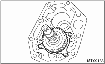

1. Install the transfer drive gear.
Tightening torque:
26 N·m (2.7 kgf-m, 19 ft-lb)

2. Install the transfer driven gear.
3. Install the extension case assembly.
4. Install the transfer case and the extension case assembly. 
5. Install the back-up light switch and the neutral position switch.
6. Install the manual transmission assembly to the vehicle.